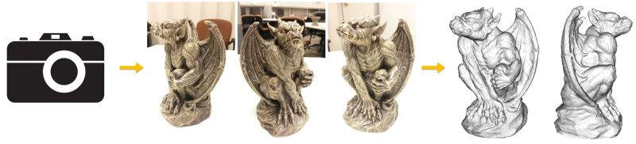

City-Scale 3D Reconstruction from Aerial ImageryWe propose a system for 3D reconstruction using multi-camera Wide Area Aerial Imagery (WAAI). Real-time performance is achieved for camera pose estimation of multi-camera imagery with parallelization on multiple GPUs. Accurate output 3D model is iteratively refined using variational method with mean error smaller than 1 meter over an entire city. Based on the reconstructed city 3D models, we also present an approach for geometric change detection by performing comparisons at the 3D geometry level between 3D models generated at different times. Our approach is able to detect geometry changes at different scales, ranging from a building cluster to vegetation changes, over the entire city. We present a system for online urban 3D reconstruction using Wide Area Aerial Surveillance (WAAS) video as input. Camera poses as well as a 2.5D Digital Surface Model (DSM) is incrementally updated as new frames arrive. Urban modeling is accomplished via volumetric reconstruction. Zhuoliang Kang, Gerard Medioni. 3D Urban Reconstruction from Wide Area Aerial Surveillance Video. Workshop on Applications for Aerial Video Exploitation (WAVE), 2015. [Paper] |
General 3D Model Acquisition with a Commodity CameraWe present a system for progressive 3D model acquisition with a commodity hand-held camera or webcam. The pipeline starts with a real-time scanning stage accomplished using a sparse point-based tracker for camera pose estimation and a dense patch-based tracker for dense reconstruction. After live scanning, our system refines the reconstructed patches into denser and more accurate patches through an offline model refinement procedure. Zhuoliang Kang, Gerard Medioni. Progressive 3D Model Acquisition with a Commodity Hand-held Camera. Winter Conference on Applications of Computer Vision (WACV), 2015. [Paper]. Zhuoliang Kang, Gerard Medioni. Fast Dense 3D Reconstruction using an Adaptive Multi-scale Discrete-Continuous Variational method. Winter Conference on Applications of Computer Vision (WACV), 2014. [Paper].  We also work on batch methods of 3D model acquisition from high-resolution discrete imagery set captured using standard digital camera. Variational methods are incorporated to iteratively refine the 3D model for structural details. |
Learning Task Groups in Multi-task LearningIn multi-task learning (MTL), multiple tasks are learnt jointly. We study the problem of multi-task learning of shared feature representations among tasks, while simultaneously determining "with whom" each task should share. Zhuoliang Kang, Kristen Grauman, and Fei Sha. Learning with Whom to Share in Multi-task Feature Learning. International Conference on Machine Learning (ICML), 2011. [Paper] [Code] [Dataset] [Slides] [Poster] |